Navigate to Products > Product Attributes using the main menu.
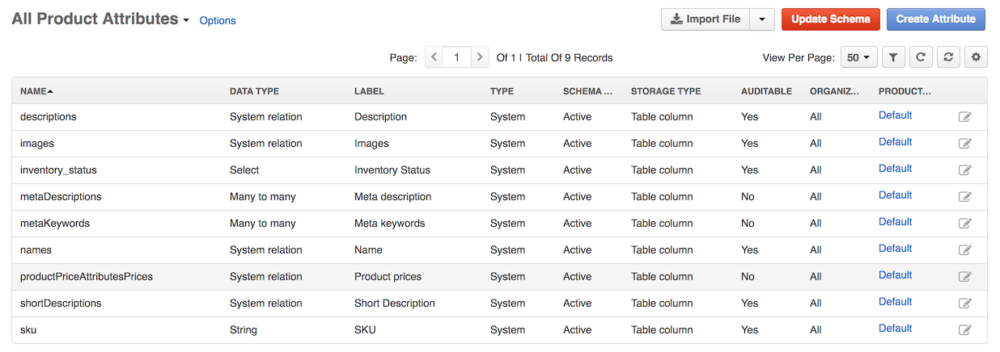
Click Create Attribute.
The following page opens:
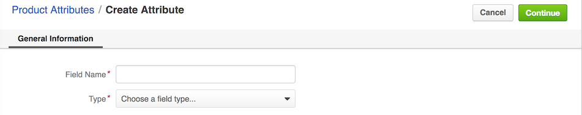
Complete the following fields:
Field
Description
Field Name
Fill in the field name that should be used to store the values of the product attribute. It should be between 2 and 22 characters long. Use only alphabetic symbols, underscore and numbers.
Type
Select an attribute type.
Select one of the Fields type to store the value of the specific data type.
BigInt
Select
String
Boolean
Currency
Date
DateTime
Decimal
File
Float
HTML
Image
Integer
Multi-Select
Percent
SmallInt
Text
Select one of the Relations for the attribute to connect your custom entities as product information (these can be used for business intelligence and segments):
Many to many – No limit of how many entity records of the selected type can be connected to the attribute, e.g. many custom entity records can be related to many products.
Many to one – Attributes cannot have more than one entity record related to them, e.g. Products A-Z can relate to Promotion A. Product A cannot relate to multiple promotions. You can reuse the same promotion in multiple product details.
One to many – One attribute can relate to many entity records, but every related entity record may be connected only once, e.g. Product A can be related to many promotions, but Promotion A cannot be related to multiple products.
Click Continue.
The page with more product attribute details opens.
Label – Enter the attribute label. It will be displayed both in the management console and in the front store.
Description – When filled in, the description will be used as a field tooltip when the attribute appears on the forms.
Provide additional information for product attributes depending on their type:
Attribute Type
Steps
Select and Multi-Select
Perform the following actions:
Click + Add next to Options.
Type in the option label. Enable the check box next to the default option.
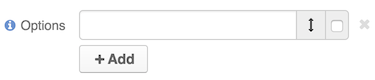
Repeat for more options.
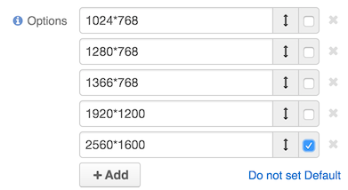
Click Do not set as default link to clear the Default flag.
Image
Enter the maximum allowed file size and provide the thumbnail dimensions.
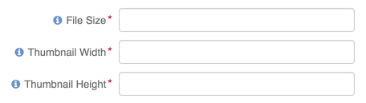
File
Enter the maximum allowed file size.
String
Enter the maximum allowed string length.
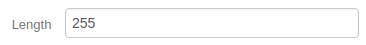
Decimal
Enter the following:
Precision — Maximum number of digits in a decimal number. For example, 15.252 has a precision of 5 and 1.12 has a precision of 3.
Scale — Maximum number of digits to the right of a decimal point. For example, 15,252 has a scale of 3 and 1.12 has a scale of 2.
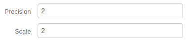
Relations:
Many to Many
One to many
Many to One
Complete the following fields:
Target Entity – Select the entity you wish to relate your current attribute to.
Bidirectional – Select Yes or No. If set to Yes, the attribute and the selected entity will be interconnected.
Related Entity Data Fields – Available only for the Many to Many and One to Many relations. Select those fields of the entity selected in Target Entity which contain information that you want to see on the master entity record edit page. These could be a couple of important details in addition to the title which gives you the most important information about the related entity record. Hold the Ctrl key to choose several fields.
Related Entity Info Title – Available only for the Many to Many and One to Many relations. Select the fields of the entity selected in Target Entity by which the users can identify the related entity record. These fields serve as a title to the related entity record on the master entity pages. Choose these fields carefully. It would be a good idea to select a related entity name or similar information. On the view page of the master entity record, these fields will appear as links to the corresponding related entity record. On the edit page of the master entity record, you will see these fields as titles of the section that contains information selected in Related Entity Data Fields. Hold the Ctrl key to choose several fields.
Related Entity Detailed – Available only for the Many to Many and One to Many relations. Select those fields of the entity selected in Target Entity which contain additional information that you want to see on the master entity record edit page. The values of the fields selected will be available in the dialog that appears when you click the title of the related entity on the master page edit page. Hold the Ctrl key to choose several fields.
Target Field – Available only for the Many to One relation. Select the field of the entity selected in Target Entity by which the entity records will be tied.
In the Frontend options section, set up the front store options applicable to the product attribute.
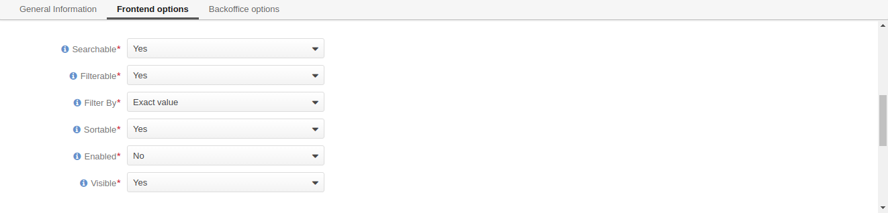
Note
Please note that if the option is not applicable to attributes of the selected type (e.g. image, text, multi-select, etc.), it does not appear in this section.
Field
Description
Searchable
If enabled, attribute content can be found in the front store via search.
Filterable
Defines whether a dedicated filter is available for the attribute in the front store.
Filter By
Defines the type of filtering to be applied to the attribute:
Fuzzy search — Find the exactly matching text and similar words. This type of filtering helps find the required values even if the entered text contains typos or incomplete words.
Exact value — Look for the values that exactly match the entered text.
Sortable
Defines whether sorting is available for the attribute in the front store.
Enabled
Defines whether the attribute is enabled in the front store.
Visible
Defines whether the attribute is visible or hidden in the front store.
In the Backoffice options section, fill in the Import & Export subsection to configure details of the product attribute’s import/export:
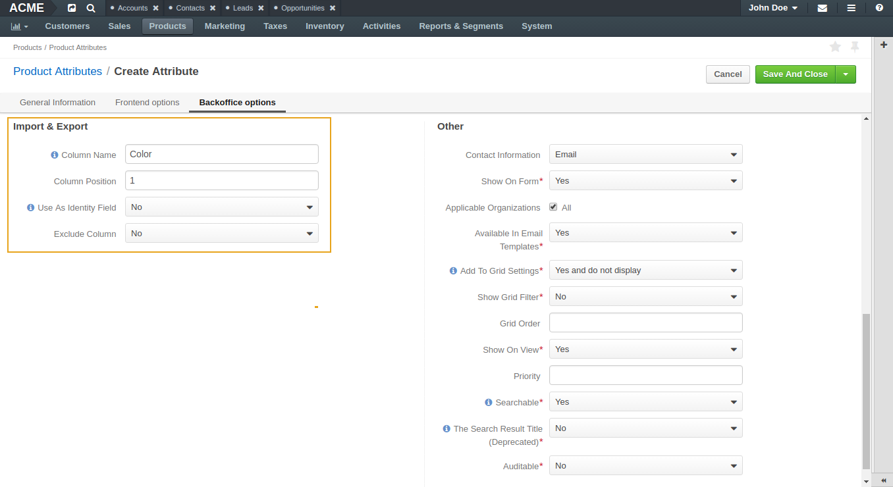
Column Name – Enter the name of the column (in a CSV file) that would represent the attribute you are creating. If left blank, a label will be used.
Column Position – Type a number that corresponds to the position of the attribute in a CSV file.
Use As Identity – Specify whether this column should be used as an identifier of the entity record. Select No, Only when not empty, or Always. If set to Only when not empty, the field may be omitted in the identity when it has no value.
Exclude Column – Select No, if you want this field available for export, or Yes if you wish to exclude the column.
Export Fields – If the attribute is of the relation type, this option defines which fields of the related entity record to export:
Identity only – Export only the field that serves as an identifier of the related entity record.
All – Export all fields of the related entity record.
In the Backoffice options section, fill in the Other subsection, specifying the configuration options for the product attribute view, search and use in the management console and front store.
Note
Please note that available options depend on the type selected for the attribute (e.g. image, text, multi-select, etc.).
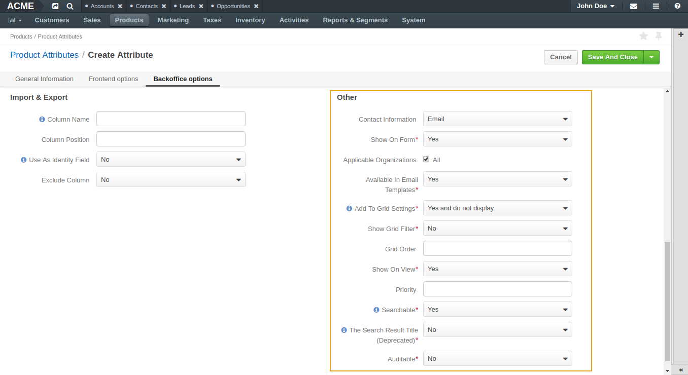
Option
Description
Contact Information
Labels the product attribute as a contact information that may be used in the marketing lists. The contact information may be:
Empty — In this case, the product attribute will not be treated as contact information.
Email — When this option is selected, the product attribute value is treated by marketing lists as email addresses.
Phone — When this option is selected, the product attribute value is treated by marketing lists as a phone number.
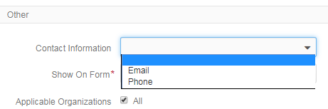
Show on Form
In this field, select Yes if you wish to have the product attribute displayed and be editable on record and page edits.
Applicable Organization
This check box determines whether you want the product attribute to be available throughout all organizations.
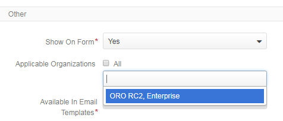
Available In Email Templates
Select Yes if you wish the product attribute to be available in email templates. To use the product attribute value in the email template:
When creating and attribute, mark it as Available in Email Templates.
Navigate to System > Emails > Templates and click Create Email Template.
In the template, select Product as the entity that the template should relate to.
On the entity variables list on the right, find the attribute and click on it to add to the template.
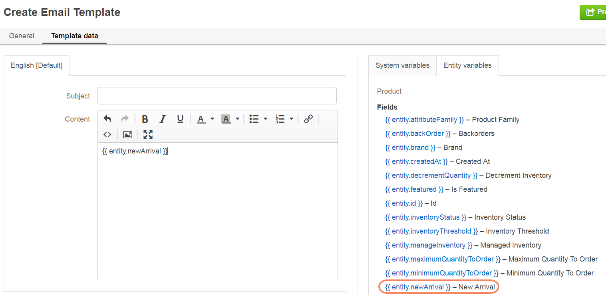
Add To Grid Settings
The option controls the availability and display of the product attribute in the products grid:
By default, Yes and Display is selected which makes the product attribute available and visible in the grid.
The Yes and do not display option means that the product attribute is hidden by default, but the visibility may be toggled in the grid settings.
The Yes as Mandatory option adds it permanently to all grid views and disables visibility toggle.
No – The product attribute visibility and appearance order cannot be toggled in the grid settings
Show Grid Filter
Select Yes to display the filter for the product attribute on the user interface.
Grid Order
Defines the order of the product attributes in the product grid. The product attributes with a smaller value of the grid order number will be displayed before the attributes with a bigger value.
Show On View
Select Yes if you wish to have this product attribute displayed on the product view page.
Priority
Priority defines the order of the product attributes on the view, edit, create pages.
Custom product attributes are always displayed one by one, usually below the system fields. If no priority is defined or the defined priority is 0, the product attributes will be displayed in the order in which they have been added to the system. The product attributes with a higher priority (a smaller value) will be displayed before the attributes with a lower priority.
Searchable
When set to Yes, the attribute is included into the search options in the management console.
Auditable
When set to Yes, the system will log changes made to this product attribute value when a user edits the product details.
Once all options are configured and the necessary information is provided, click Save.
If the created attribute is of a table column storage type, click Update Schema to reindex the data for search and filter.
Note
The product attribute storage type is set to table column for the attribute with Select of Multi-Select data type, and also for the attribute of any type with Filterable or Sortable option enabled. If this step is omitted, the newly created attribute will not appear in the select attribute options in other areas of OroCommerce (e.g. product families configuration).
You can check an attribute’s storage type on the page with the attributes list:
You can import the bulk details of the product attributes information in the .csv format following the steps described in the Importing Product Attributes guide.
{kind=link}